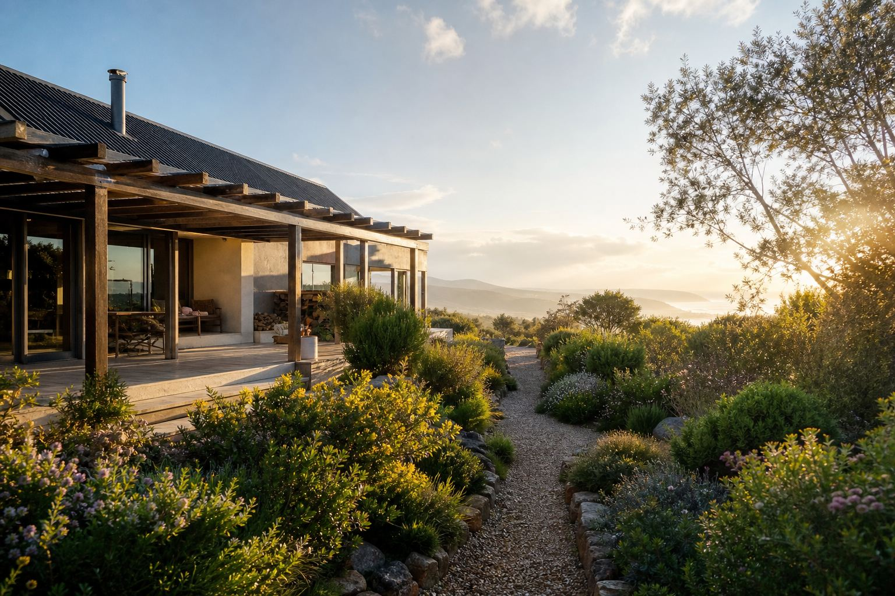

Capability · Proof of concept
Site capture, digital twins and QR-linked views
A phone code that opens a 3D view of a real place or part. Prototype work, not a facilities contract.
Some briefs need a real place or a real part, then a simple way to open that view from a phone. Superimmersive Art can prototype that from capture, browser 3D, and WebAR already described on this site.
This page is a capability note. It is not a claim of a city, municipal, or facilities-management contract, and it does not name a client for that work.
What already exists
- 3D Gaussian splatting for navigable spaces such as property, tourism, heritage, and sites. The pipeline is ready. A capture needs a 360 drone.
- 3D scanning of objects and environments, including digital twins of products for the web and AR.
- QR codes and image markers that open WebAR. The WebAR page uses this for menus, cards, packaging, and similar demos.
- Browser 3D you can orbit, on the interactive web page.
What a facilities-style proof of concept would be
A code on a room, a plant room, or a piece of equipment opens a 3D view of that asset. A short note can sit with the view so someone on site can record a fault without hunting through a separate manual. The pieces above are the capture, the viewer, and the phone link. Wired together, they are a prototype the studio can build for a site that wants to test the workflow.
Captured buildings can also feed Super Immersive Homes as a walkthrough layer. That product is a working core and is pre-revenue. It is a design conversation tool, not a facilities platform.
What this is not
- Not a deployed helpdesk or work-order system.
- Not an integration with a city’s asset register.
- Not a statement that any municipality is a client.
If a project needs to write into a system the client already uses, that integration has to be scoped against that system. It is not something this site claims is done.
Related
Start a project
One ask: tell Devon what you want built. Sending opens an email to devon@superimmersive.io. Nothing is stored on this site.
Superimmersive Art (Pty) Ltd · George, Western Cape · 068 594 3568